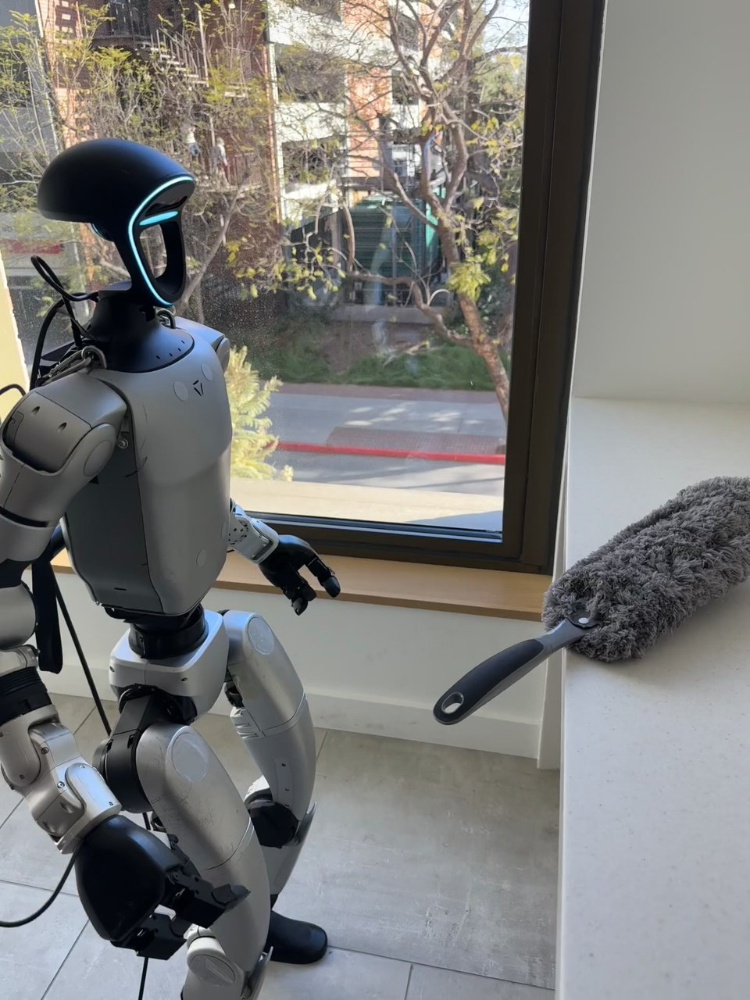

Humanoid Everyday · loco-manip-1__clean_the_window
Clean the window

Annotation
From the dedicated visual review of this video (humanoid_action_v1). Plain text · JSON
Observed outcome
Duster rests on the original light-colored ledge to image right, no longer held. The right hand is empty and lowered beside the robot; the left hand remains empty. The robot stands next to the ledge after completing the tool-use and return sequence.
Hand roles
- Right
Sole manipulating hand: grasps the projecting handle, lifts and carries the duster, performs raised sideways/downward wiping strokes, puts it back onto the ledge, and releases it.
- Left
Empty, nonparticipating hand; stays beside the torso through turn, wiping and return. It neither supports the duster nor touches the window.
- Coordination
Single-hand tool use coordinated with whole-body stepping and turning to face the window and return to the ledge. No hand-to-hand transfer or person interaction is visible.
Robot-side evidence
- Description
Initial PNG shows the front chest panel and robot facing image right. The active nearer arm is attached to its right shoulder, with its farther left hand visible on the opposite side of the chest. Following this same arm through the turn gives the active arm on image right when the rear torso faces the camera (frames 338, 420, 520), independently confirming anatomical right. The idle arm is image left in that rear view.
- Confidence
high
- Uncertainty
None recorded.
Chronology
- Source frame interval
- 0
- 77
- Action
Right arm lifts and extends toward the projecting duster handle; the left hand stays clear. Body stays near the ledge.
- Confidence
high
- Source frame interval
- 78
- 197
- Action
Right fingers surround and close around the handle while the duster head remains on the ledge. The hand maintains the grip before lifting.
- Confidence
high
- Source frame interval
- 198
- 255
- Action
Right hand lifts the duster free, rotates it upright, and draws it toward the chest. Left hand does not assist.
- Confidence
high
- Source frame interval
- 256
- 447
- Action
With the duster held upright in the right hand, the robot takes short alternating steps and turns until its back faces the camera and its front faces the window; the left arm hangs beside it.
- Confidence
high
- Source frame interval
- 448
- 639
- Action
Right shoulder/elbow raise and extend the tool toward the window. The head moves toward image right at roughly shoulder height, then sweeps downward and left toward the torso in a wiping stroke. Contact depth is not independently resolved at every point.
- Confidence
high for movement; medium for continuous glass contact
- Source frame interval
- 640
- 701
- Action
Right hand raises the duster again and makes another sideways/downward sweep, varying the height and tilt of its head across the window. Left hand remains idle.
- Confidence
high for movement; medium for continuous glass contact
- Source frame interval
- 702
- 921
- Action
Robot lowers the held duster toward its torso, steps laterally/back from its wiping stance, moves partly out of the image at left, then steps back into view and turns toward the original ledge. Grip remains in the right hand.
- Confidence
high
- Source frame interval
- 922
- 1023
- Action
Right arm extends the tool over the ledge and lowers/tilts the fluffy head onto it. The duster lies supported on the ledge as the right fingers open around its handle.
- Confidence
high
- Source frame interval
- 1024
- 1091
- Action
Right hand moves away empty and lowers beside the body. Duster remains resting on the ledge with its handle visible; robot stands beside it.
- Confidence
high
Uncertainties
- The frontal/rear projection cannot establish uninterrupted duster-to-glass contact throughout every sweep; the head follows clear wiping movements across the window plane, and portions are briefly occluded by the robot.
- Visible dirt removal or final cleanliness cannot be established. Success denotes the observed grasp, wiping-motion sequence and completed tool return/release, not a verified clean surface.
- The robot is partially out of view during the lateral/backward stepping phase around frames 736-798; the held duster and parts of the body remain visible and re-entry confirms retained possession.
Complete review record action_review.json
{
"prompt_protocol": "humanoid_action_v1",
"prompt_provenance": "visually_authored_from_video_and_initial_frame",
"reviewed_contact_sheets": [
"sheet_001.jpg",
"sheet_002.jpg",
"sheet_003.jpg",
"sheet_004.jpg",
"sheet_005.jpg",
"sheet_006.jpg",
"sheet_007.jpg",
"sheet_008.jpg",
"sheet_009.jpg"
],
"inspected_frame_stride": 2,
"inspected_sampled_frame_count": 546,
"initial_scene": "Robot stands in three-quarter front/right-side view beside a window. A gray fluffy duster lies on the light-colored ledge at image right with its dark handle projecting toward the robot. Both hands are initially empty; its nearer anatomical right arm hangs low and its left hand is farther away beside the torso.",
"observed_sequence": [
{
"source_frame_interval": [
0,
77
],
"action": "Right arm lifts and extends toward the projecting duster handle; the left hand stays clear. Body stays near the ledge.",
"confidence": "high"
},
{
"source_frame_interval": [
78,
197
],
"action": "Right fingers surround and close around the handle while the duster head remains on the ledge. The hand maintains the grip before lifting.",
"confidence": "high"
},
{
"source_frame_interval": [
198,
255
],
"action": "Right hand lifts the duster free, rotates it upright, and draws it toward the chest. Left hand does not assist.",
"confidence": "high"
},
{
"source_frame_interval": [
256,
447
],
"action": "With the duster held upright in the right hand, the robot takes short alternating steps and turns until its back faces the camera and its front faces the window; the left arm hangs beside it.",
"confidence": "high"
},
{
"source_frame_interval": [
448,
639
],
"action": "Right shoulder/elbow raise and extend the tool toward the window. The head moves toward image right at roughly shoulder height, then sweeps downward and left toward the torso in a wiping stroke. Contact depth is not independently resolved at every point.",
"confidence": "high for movement; medium for continuous glass contact"
},
{
"source_frame_interval": [
640,
701
],
"action": "Right hand raises the duster again and makes another sideways/downward sweep, varying the height and tilt of its head across the window. Left hand remains idle.",
"confidence": "high for movement; medium for continuous glass contact"
},
{
"source_frame_interval": [
702,
921
],
"action": "Robot lowers the held duster toward its torso, steps laterally/back from its wiping stance, moves partly out of the image at left, then steps back into view and turns toward the original ledge. Grip remains in the right hand.",
"confidence": "high"
},
{
"source_frame_interval": [
922,
1023
],
"action": "Right arm extends the tool over the ledge and lowers/tilts the fluffy head onto it. The duster lies supported on the ledge as the right fingers open around its handle.",
"confidence": "high"
},
{
"source_frame_interval": [
1024,
1091
],
"action": "Right hand moves away empty and lowers beside the body. Duster remains resting on the ledge with its handle visible; robot stands beside it.",
"confidence": "high"
}
],
"arm_hand_roles": {
"right": "Sole manipulating hand: grasps the projecting handle, lifts and carries the duster, performs raised sideways/downward wiping strokes, puts it back onto the ledge, and releases it.",
"left": "Empty, nonparticipating hand; stays beside the torso through turn, wiping and return. It neither supports the duster nor touches the window.",
"coordination": "Single-hand tool use coordinated with whole-body stepping and turning to face the window and return to the ledge. No hand-to-hand transfer or person interaction is visible."
},
"anatomical_side_evidence": {
"description": "Initial PNG shows the front chest panel and robot facing image right. The active nearer arm is attached to its right shoulder, with its farther left hand visible on the opposite side of the chest. Following this same arm through the turn gives the active arm on image right when the rear torso faces the camera (frames 338, 420, 520), independently confirming anatomical right. The idle arm is image left in that rear view.",
"confidence": "high",
"uncertainty": null
},
"terminal_state": "Duster rests on the original light-colored ledge to image right, no longer held. The right hand is empty and lowered beside the robot; the left hand remains empty. The robot stands next to the ledge after completing the tool-use and return sequence.",
"uncertainties": [
"The frontal/rear projection cannot establish uninterrupted duster-to-glass contact throughout every sweep; the head follows clear wiping movements across the window plane, and portions are briefly occluded by the robot.",
"Visible dirt removal or final cleanliness cannot be established. Success denotes the observed grasp, wiping-motion sequence and completed tool return/release, not a verified clean surface.",
"The robot is partially out of view during the lateral/backward stepping phase around frames 736-798; the held duster and parts of the body remain visible and re-entry confirms retained possession."
],
"annotation_discrepancies": [],
"source_annotation_notes": "Original annotation describes walking to and cleaning a window. The full video supports a short turn/step approach, right-hand duster sweeps at varying heights, and a return/release omitted from that brief caption; no contradiction is observed.",
"evidence_frame_indices": [
0,
78,
116,
200,
254,
338,
420,
520,
550,
600,
680,
740,
830,
920,
1020,
1091
],
"selected_execution_status": "success",
"execution_status_basis": "Grasp, lift, carried locomotion, window-directed wiping strokes and supported return/release are visibly completed. Surface-cleanliness effectiveness remains unverified.",
"inspection_coverage": {
"contact_sheets_viewed": 9,
"sampled_frames_viewed": 546,
"entire_source_interval": [
0,
1091
],
"native_source_initial_png_viewed": true,
"native_transition_and_final_frames_viewed": [
78,
116,
200,
254,
338,
420,
520,
550,
600,
680,
740,
830,
920,
1020,
1091
]
},
"video_id": "loco-manip-1",
"dataset": "Humanoid_Everyday",
"dedicated_review_agent": "review_he_loco_manip_1",
"review_source_video": "Humanoid_Everyday/loco-manip-1__clean_the_window/third_person/original/original.mp4",
"source_frame_count": 1092,
"source_fps": 30.0,
"native_detail_frames": [
78,
116,
200,
254,
338,
420,
520,
550,
600,
680,
740,
830,
920,
1020,
1091
],
"world_model_prompt": "The humanoid grasps the gray duster's handle with its right hand, lifts it from the ledge, and turns with short steps to face the window. It raises the duster and sweeps its head across the window in repeated sideways and downward wiping strokes at different heights. Still holding the handle, it turns and steps back to the ledge, lays the duster down, releases it, and lowers its empty right hand. Keep the camera fixed; preserve robot geometry, physically valid joint motion, and normal gripper opening and closing.",
"original_task_instruction": "Walking to and cleaning a window, combining locomotion with manipulation for reaching and wiping motions at different heights.",
"selected_segment": {
"start_frame": 0,
"end_frame_exclusive": 1092,
"reason": "Complete original single-task reference; no cropping or trimming requested."
},
"source_video_sha256": "47f0cc0213aa3c1ef60ffe1dda45d86c5cdc5d7a3ce3712f38bc1fad11e8b1d5",
"review_completed_at": "2026-10-13T17:34:45.965192+00:00"
}